El Sistema de Agua Potable de Mexquitic es una plataforma web que permite administrar de forma digital todo el proceso de cobro de agua: desde registrar usuarios y medidores, hasta capturar lecturas en campo, generar recibos y registrar pagos.
Panel Admin
Para el personal de oficina. Gestiona usuarios, medidores, recibos y pagos.
Verificador
Para el lector de campo. Captura las lecturas de los medidores en casa de cada usuario.
Cobro en campo
Para el cobrador. Escanea el QR del recibo y registra el pago en el momento.
Hay tres páginas de acceso, una por cada módulo. Todas están en la misma pantalla, seleccionando la pestaña correspondiente:
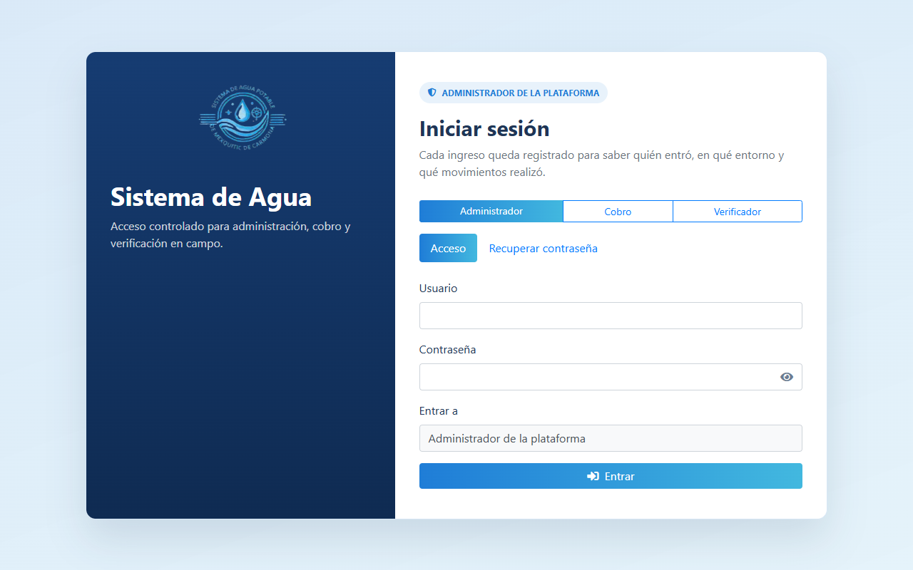
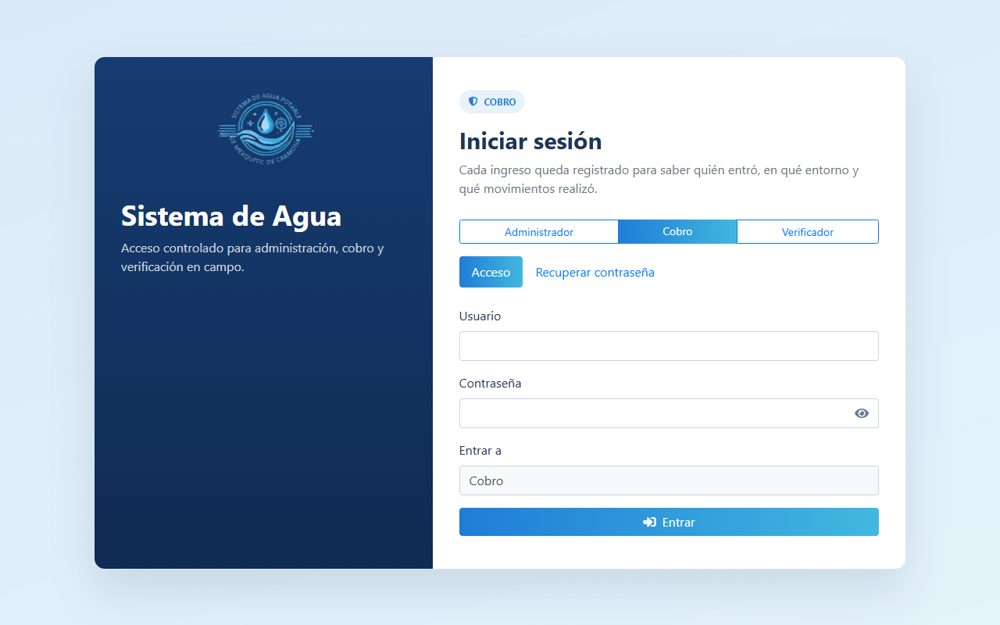
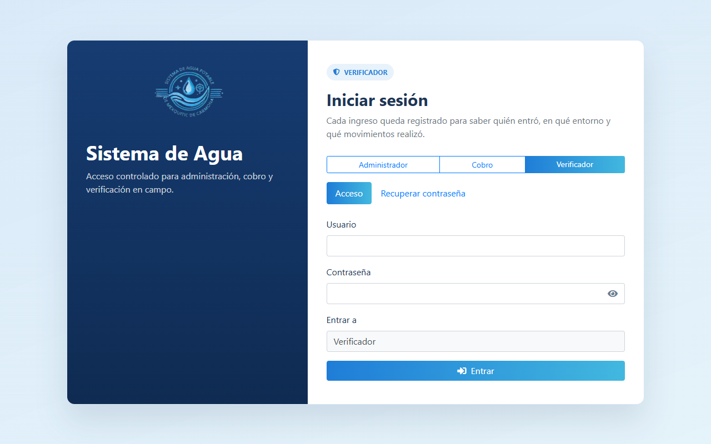
Pasos para ingresar
- Abre el navegador y escribe la dirección del sistema.
- Selecciona tu módulo (Administrador / Cobro / Verificador) en las pestañas.
- Ingresa tu usuario y contraseña.
- Presiona Entrar.
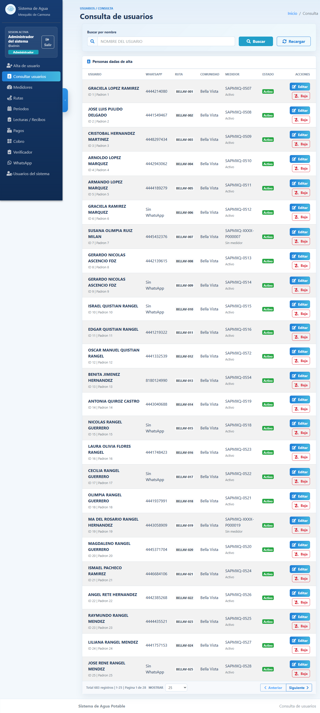
Al ingresar como administrador verás un menú lateral con todas las secciones del sistema.
3.1 Alta de usuario
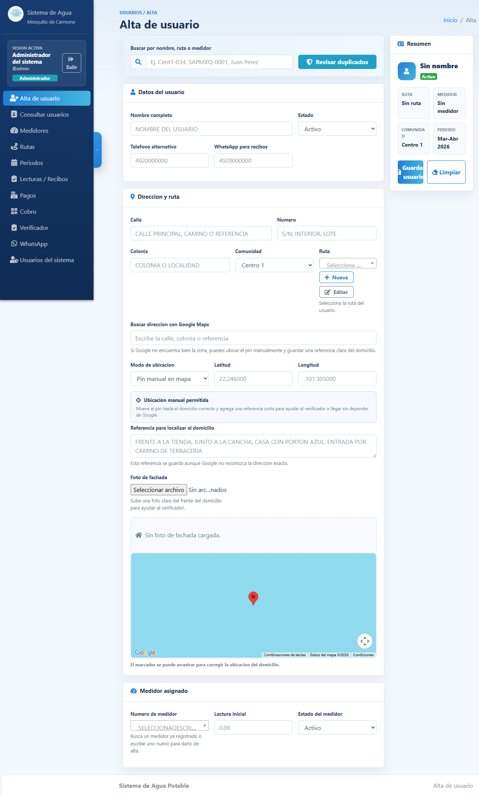
- Llena nombre completo, teléfono y WhatsApp del usuario.
- Selecciona la ruta a la que pertenece.
- Agrega su domicilio: calle, número, colonia.
- Opcionalmente marca su ubicación en el mapa.
- Presiona Guardar. El sistema revisará duplicados.
3.2 Consulta de usuarios
Muestra la lista completa del padrón. Puedes buscar por nombre, ruta o medidor, y editar o dar de baja usuarios desde aquí.
3.3 Medidores
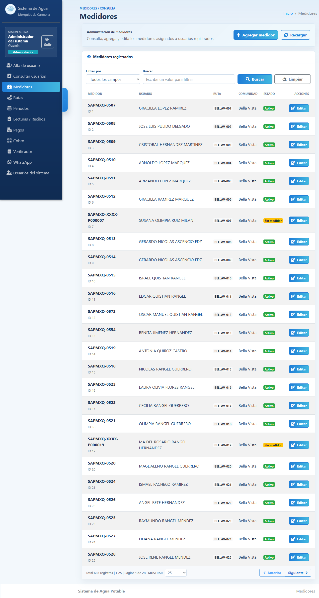
- Cada usuario debe tener un medidor activo para capturar lecturas.
- El número de medidor sigue el formato SAPMXQ-0000.
- Si un medidor se reemplaza, se marca como reemplazado y se crea el nuevo.
3.4 Rutas
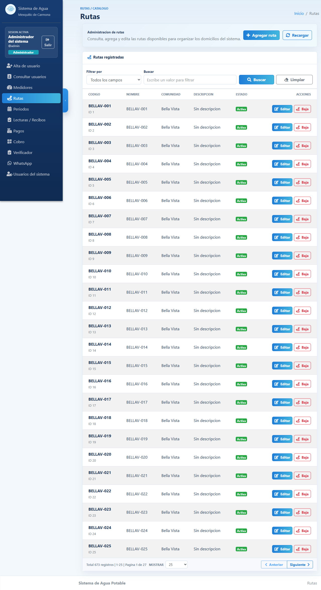
Las rutas agrupan usuarios por zona geográfica. El verificador busca usuarios seleccionando una ruta (ej. Bellav-001).
3.5 Periodos bimestrales
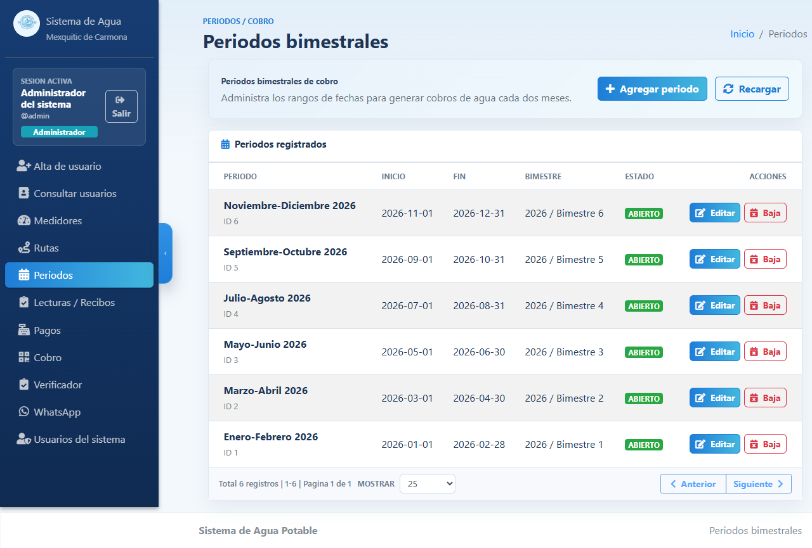
El cobro del agua se realiza cada dos meses. Hay 6 periodos por año. El sistema detecta automáticamente el periodo activo según la fecha.
| Bimestre | Meses |
|---|---|
| 1 | Enero – Febrero |
| 2 | Marzo – Abril |
| 3 | Mayo – Junio |
| 4 | Julio – Agosto |
| 5 | Septiembre – Octubre |
| 6 | Noviembre – Diciembre |
3.6 Lecturas y recibos
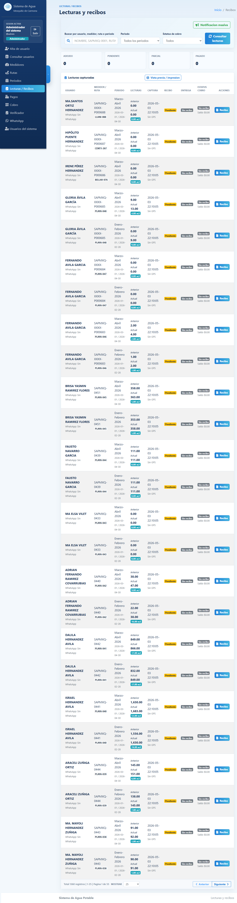
- Busca al usuario por nombre o ruta.
- Selecciona el periodo.
- El sistema calcula el monto automáticamente según el consumo.
- Haz clic en Generar recibo. Se crea con código QR único.
- Envíalo por WhatsApp o imprímelo.
3.7 Pagos
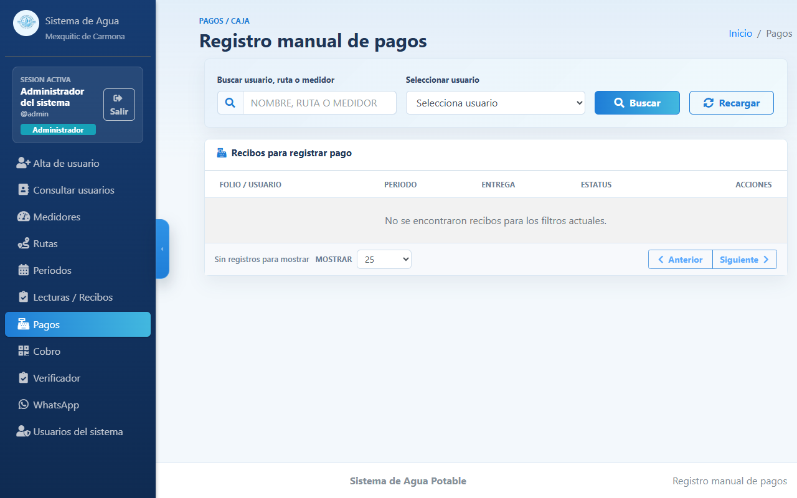
- Busca al usuario y verás sus recibos pendientes.
- Selecciona el recibo y registra el pago manualmente.
- Se guarda quién registró cada pago y a qué hora.
3.8 WhatsApp
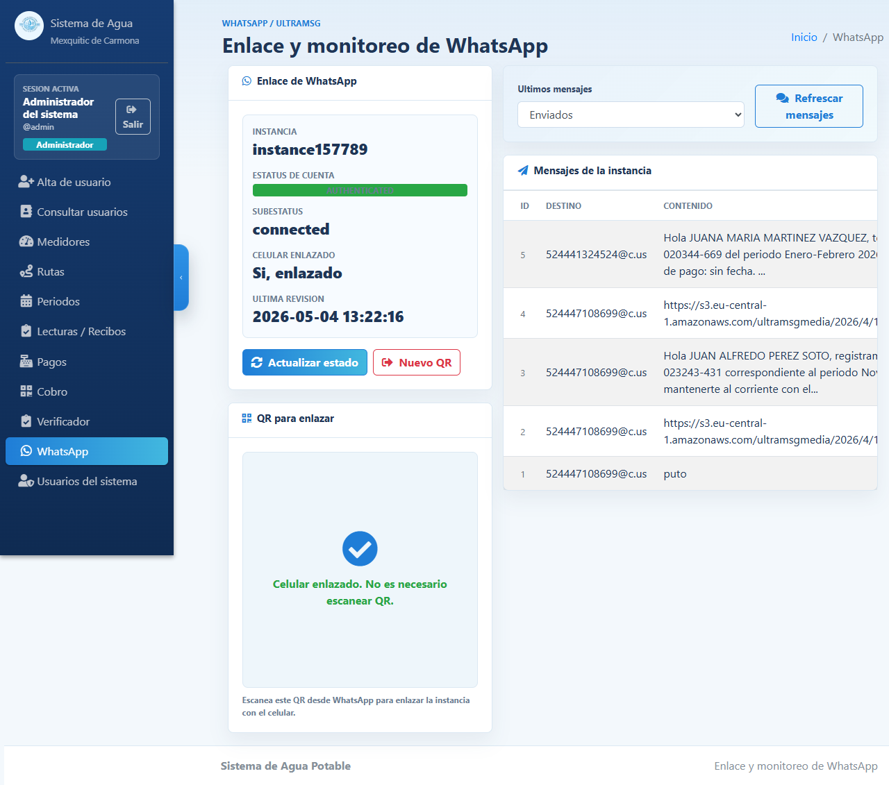
- Envío de recibos y notificaciones masivas por WhatsApp.
- Se puede ver el historial de mensajes enviados.
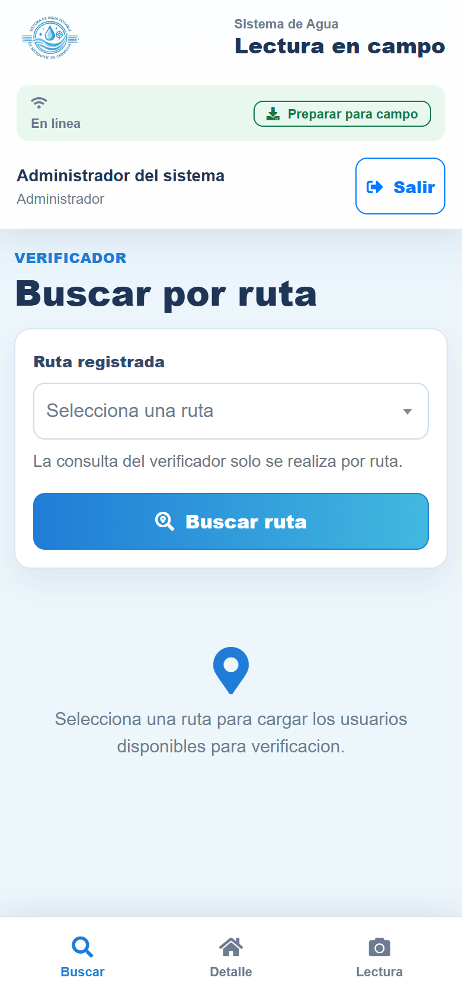
Herramienta para el lector de medidores en campo. Diseñada para teléfono celular.
Flujo de trabajo
Paso a paso
- Ingresa con tu usuario y contraseña de Verificador.
- Selecciona la ruta asignada (ej. Bellav-001).
- Aparece la lista de usuarios de esa ruta. Toca el nombre del usuario cuyo medidor vas a leer.
- Verás el número de medidor, dirección y la última lectura registrada.
- Presiona "Registrar lectura" e ingresa el número actual del medidor. Opcionalmente: foto del medidor, observaciones y GPS.
- Presiona "Guardar lectura". El consumo se calcula automáticamente.
| Campo | Descripción |
|---|---|
| Medidor | Número de medidor (ej. SAPMXQ-0510) |
| Ultima lectura | Lo que marcaba el medidor al inicio de este bimestre |
| Periodo de cobro | Bimestre activo (ej. Mayo-Junio 2026) |
| Rango del periodo | Fechas de inicio y fin del bimestre |
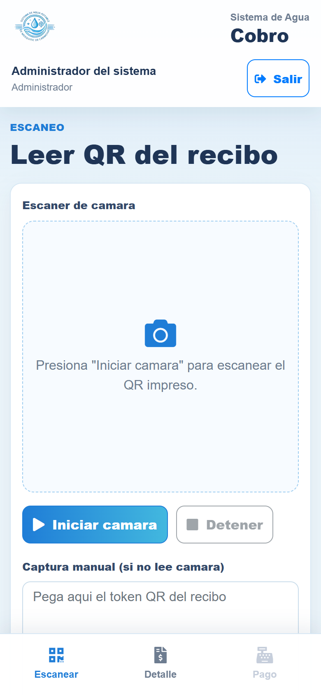
- Ingresa con tu usuario y contraseña de Cobrador.
- Para cobrar un recibo:
- Escanear QR: El usuario presenta su recibo y el cobrador escanea el código QR.
- Buscar manualmente: Escribe el nombre del usuario y selecciona el recibo.
- El sistema muestra el monto a pagar. Confirma el pago.
| Consumo | Precio por m³ |
|---|---|
| Primeros 15 m³ | $10.00 / m³ |
| A partir del m³ 16 | $15.00 / m³ |
Ejemplo: 20 m³ consumidos
- 15 m³ × $10 = $150
- 5 m³ × $15 = $75
- Total: $225 + $10 cooperación = $235
- Con internet disponible, entra al verificador en el teléfono.
- Presiona "Preparar para campo" (botón de descarga en la barra superior).
- Espera el mensaje: "Listo. XXX usuarios disponibles sin conexión".
- Ya puedes salir a campo sin internet.
- Las lecturas capturadas sin internet se guardan en el teléfono.
- Al recuperar señal, presiona "Sincronizar" para enviarlas al servidor.
¿Por qué no aparece un usuario en el verificador?
Posibles causas: el usuario está inactivo, no tiene medidor asignado, o no está en la ruta seleccionada.
¿Qué significa "Ultima lectura: 0"?
El medidor no tiene lecturas anteriores. El verificador debe capturar el valor actual del medidor físico normalmente.
¿Puedo corregir una lectura ya guardada?
Sí. Entra al mismo usuario en el mismo periodo y el sistema actualizará la lectura. Si el recibo ya fue generado, el administrador debe eliminarlo y regenerarlo.
¿Qué hago si el medidor está dañado o no se puede leer?
Usa el campo Observaciones para describirlo (ej. "Medidor dañado", "Casa cerrada"). Puedes guardar sin capturar lectura.
¿Cómo sé que la sincronización funcionó?
El contador de "pendiente(s)" en la barra superior queda en 0 después de sincronizar.
¿Un usuario puede aparecer dos veces?
Sí, si tiene dos propiedades con medidores distintos. El sistema las trata como cuentas separadas, cada una con su propio padrón.